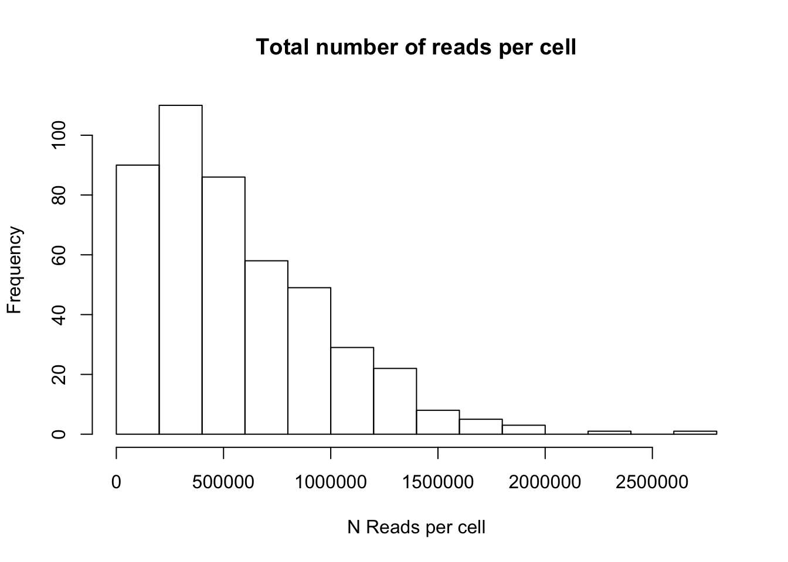
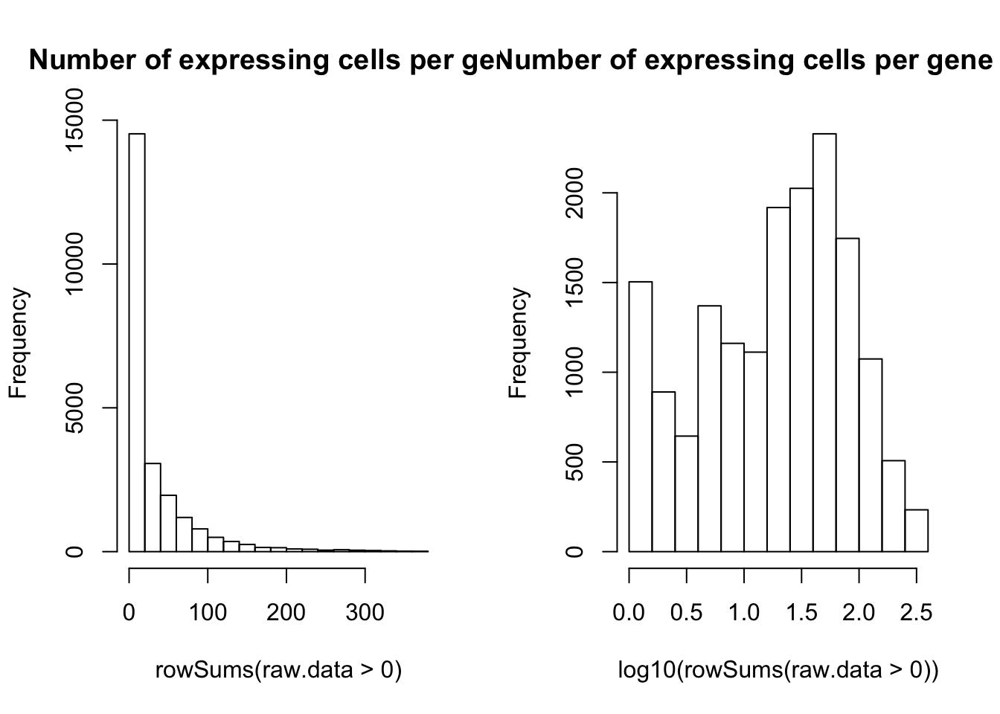

A pipeline to analyse single-cell RNA sequencing data
Alejandro Granados
24/07/2019
Single cell RNA seq
Single cell examines the sequence information of RNA inside individual cells. By amplifying the signal from RNA inside the cell and converting the RNA into DNA, we can use sequencing methods to recover the information of which RNAs were present in a given cell. Moreover, different technologies allow to sequence multiple cells in parallel. For example, the 10x Genomics platform enables up to 10,000 cells per sample!
The amount of genes in a given cell (~20,000 for mouse) times the number of cells means that we are dealing with really large matrices. One challenge, however, is that until today we can not read ALL the RNA from a single cell. In the processes of sequencing, most of the RNA is lost! This dropout problem imposes serious challenges for data analysis.
Here, we will go through a standar pipeline to analyse scRNA-seq data from a cell atlas: the Tabula Muris https://tabula-muris.ds.czbiohub.org/. In a cell atlas, researchers try to sequence the whole organisms with single cell resolution. As you can imagine, this is a huge amount of data. For the purpose of this tutorial, we will focus on a single tissue.
We will use the specialized library Seurat which has been developed by Rahul Sajita and co-workers https://satijalab.org/seurat/
Let’s start by downloading the dataset from here: https://figshare.com/articles/Single-cell_RNA-seq_data_from_Smart-seq2_sequencing_of_FACS_sorted_cells_v2_/5829687
# make sure to instal the libraries if you haven't
library(Seurat)
library(dplyr)##
## Attaching package: 'dplyr'## The following objects are masked from 'package:stats':
##
## filter, lag## The following objects are masked from 'package:base':
##
## intersect, setdiff, setequal, unionlibrary(Matrix)
library(stringr)
library(readr)
library(here)## here() starts at /Users/alejandrog/DataScienceMXLoading Data
We can read the data using the function read.csv and convert it into a sparse matrix (data is full of zeros!)
Sort the cells by name (their name contains information about the experimental conditions)
Now, let’s load the metadata, which contains the information about the data!
## plate.barcode mouse.id tissue subtissue FACS.selection mouse.sex
## 1 D041914 3_8_M Bladder Multiple M
## 2 D042253 3_9_M Bladder Multiple M
## 3 MAA000487 3_10_M Bladder Multiple M
## 4 B000610 3_56_F Bladder Multiple F
## 5 B002764 3_38_F Bladder Multiple F
## 6 B002771 3_39_F Bladder Multiple FThe metadata has all the information about the experiments. Every organ was processed and sequenced by a different research group and so we need to find which cells correspond to which experiment. In the protocol they use for scRNA-seq, each cell is sequenced on a well of a plate. The information in the metadata represents plates! Let’s link the plates to the cells
The ERCC sequences tell us about the library size and differences between cell to cell. We can plot the amount of ERCC in the data per cell and see if there are clear outliers that we should remove.
hist(percent.ercc)
Since a cell in principle should not have too many ERCC (these are only for control) we should remove cells with high ERCC content
ERCC sequences are useful as a control for the data because they were added by the scientists in known concentrations. In this way we expect ALL cells to have the same ERCC content, right? But things are not that simple, the technology is not perfect and different cells are sequenced in different ways or with different efficiency. Can you think of a way in which we could use ERCC sequences to normalize the data?
First, we want to get rid of cell with too high ERCC content. Where would you put a cutoff?
raw.data = raw.data[,percent.ercc<0.15]#Take from meta.data only cells that remain in the matrix
cell.meta.filter = cell.meta.data[colnames(raw.data), ]
head(cell.meta.filter)## plate.barcode mouse.id tissue subtissue
## A1.B001717.3_38_F.1.1 B001717 3_38_F Kidney
## A10.B002775.3_39_F.1.1 B002775 3_39_F Kidney
## A10.MAA000752.3_10_M.1.1 MAA000752 3_10_M Kidney
## A11.MAA000801.3_11_M.1.1 MAA000801 3_11_M Kidney
## A12.B001717.3_38_F.1.1 B001717 3_38_F Kidney
## A12.MAA000801.3_11_M.1.1 MAA000801 3_11_M Kidney
## FACS.selection mouse.sex
## A1.B001717.3_38_F.1.1 Viable F
## A10.B002775.3_39_F.1.1 Viable F
## A10.MAA000752.3_10_M.1.1 Viable M
## A11.MAA000801.3_11_M.1.1 Viable M
## A12.B001717.3_38_F.1.1 Viable F
## A12.MAA000801.3_11_M.1.1 Viable MLet’s now check how different are cells with each other. Are there cells that have not enough data? The columns in the matrix represent the cells so we can sum over the columns and plot a histogram.
# Total number of reads per cell
hist(colSums(raw.data))
# But some genes might have many reads while some other genes might have low expression in living cells.
# We can also ask then, how many genes have at least 1 read
hist(colSums(raw.data>0))
What is the average number of genes expressed per cells?
#Note that we define a gene as expressed if the cell has at least 1 read. But this definition can change.
mean(colSums(raw.data>0))## [1] 1665.79#Based on the histogram we can keep only cells that have more than 1000 genes with >0 reads
raw.data<-raw.data[,colSums(raw.data>0)>1000]
#Try looking at the histogram nowAnothe imporant filter is by gene. Some genes are very poorly expressed, maybe because they have low expression in general or maybe they are not expressed in this particular tissue/condition.
To see the distribution of genes, we need to sum by row.
# Number of reads for each gene across cells
hist(rowSums(raw.data))# We can also look at how many cells express each gene
hist(rowSums(raw.data>0))
Seurat
Seurat is a R-based software package for analysis of single cell RNA seq. I has been shown to perfom well across different datasets and normalization methods.
Here are some references where people has compared Seurat with other methods (there are many methods and packages for analysis of single cell RNA seq!) https://www.nature.com/articles/s41592-019-0425-8
# # # # ## SEURAT OBJECT
tissue <- CreateSeuratObject(counts = raw.data)## Warning: Feature names cannot have underscores ('_'), replacing with dashes
## ('-')tissue <- AddMetaData(object = tissue, cell.meta.data)
tissue <- AddMetaData(object = tissue, percent.ercc, col.name = "percent.ercc")We can now normalize the data. One of the technical problems of RNA sequencing is that some RNA molecules are not detected and other are highly produced in cells, so the distribution of expression is wide.
tissue<-NormalizeData(object = tissue, verbose=F)
tissue<-FindVariableFeatures(object=tissue,selection.method ="vst",nfeatures =2000)
tissue<-ScaleData(tissue)## Centering and scaling data matrixtissue <- RunPCA(object = tissue, npcs = 100, verbose = FALSE)
VizDimLoadings(object = tissue, dims = 1:4, reduction = "pca")ElbowPlot(tissue)
#Run this only if you have python installed and if you installed UMAP
tissue <- RunUMAP(object = tissue, reduction = "pca", dims = 1:40)
# A different method for visualization is tSNE
tissue <- RunTSNE(tissue,dims=1:10)
tissue <- FindNeighbors(object = tissue, reduction = "pca", dims = 1:40)## Computing nearest neighbor graph## Computing SNNtissue <- FindClusters(tissue, resolution = 0.8)## Modularity Optimizer version 1.3.0 by Ludo Waltman and Nees Jan van Eck
##
## Number of nodes: 376
## Number of edges: 13590
##
## Running Louvain algorithm...
## Maximum modularity in 10 random starts: 0.7630
## Number of communities: 5
## Elapsed time: 0 seconds#Finally, let’s take a look at the clusters in a 2-D space
DimPlot(object = tissue, reduction = "umap")